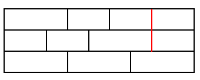

Consider the problem of building a wall out of $2 \times 1$ and $3 \times 1$ bricks ($\text{horizontal} \times \text{vertical}$ dimensions) such that, for extra strength, the gaps between horizontally-adjacent bricks never line up in consecutive layers, i.e. never form a "running crack".
For example, the following $9 \times 3$ wall is not acceptable due to the running crack shown in red:

There are eight ways of forming a crack-free $9 \times 3$ wall, written $W(9,3) = 8$.
Calculate $W(32,10)$.